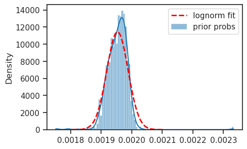
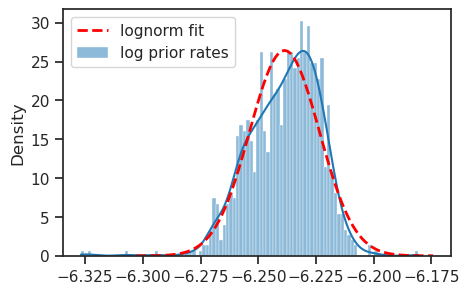

(06) DOVES—CategConv—0#
Motivation: Categorical with 512 x 2 (essentially Bernoulli) + DOVES + Conv encoder. prior_fit = True. Device = cuda:0
Show code cell source
# HIDE CODE
import os, sys
from IPython.display import display
# tmp & extras dir
git_dir = os.path.join(os.environ['HOME'], 'Dropbox/git')
extras_dir = os.path.join(git_dir, 'jb-vae/_extras')
fig_base_dir = os.path.join(git_dir, 'jb-vae/figs')
tmp_dir = os.path.join(git_dir, 'jb-vae/tmp')
# GitHub
sys.path.insert(0, os.path.join(git_dir, '_PoissonVAE'))
from figures.fighelper import *
from vae.train_vae import *
# warnings, tqdm, & style
warnings.filterwarnings('ignore', category=DeprecationWarning)
from rich.jupyter import print
%matplotlib inline
set_style()
device_idx = 0
device = f'cuda:{device_idx}'
model_type = 'categorical'
Archi: <Conv|Lin>#
cfg_vae, cfg_tr = default_configs('DOVES', model_type, 'conv+b|lin')
cfg_vae['fit_prior'] = True
cfg_vae['n_categories'] = 512
cfg_vae['n_latents'] = 2
print(f"VAE:\n{cfg_vae}\n\nTrainer:\n{cfg_tr}")
VAE: {'dataset': 'DOVES', 'n_ch': 32, 'n_latents': 2, 'n_categories': 512, 'enc_type': 'conv', 'dec_type': 'lin', 'enc_bias': True, 'dec_bias': False, 'fit_prior': True} Trainer: {'temp_stop': 0.1, 'temp_anneal_portion': 1.0, 'temp_anneal_type': 'exp', 'lr': 0.005, 'batch_size': 1000, 'epochs': 3000, 'optimizer_kws': {'weight_decay': 0.0}, 'grad_clip': 500}
vae = MODEL_CLASSES[model_type](CFG_CLASSES[model_type](**cfg_vae))
tr = TrainerVAE(vae, ConfigTrainVAE(**cfg_tr), device=device)
vae.print()
print(f"{vae.cfg.name()}\n{tr.cfg.name()}_({vae.timestamp})\n")
tr.show_schedules()
+----------------+------------+ | Module Name | Num Params | +----------------+------------+ | CategoricalVAE | 1.6 Mil | | --- | --- | | stem | 352 | | enc | 1.2 Mil | | fc_enc | 132.1 K | | fc_dec | 262.1 K | +----------------+------------+
categorical_c-512_fit-prior_DOVES_z-2_k-32_<conv+b|lin> mc_b1000-ep3000-lr(0.005)_beta(1:0x0.5)_temp(0.1:exp-1)_gr(500)_(2024_05_06,17:20)

Train#
# comment = f"..._{tr.cfg.name()}"
comment = tr.cfg.name()
tr.train(comment=comment)
epoch # 3000, avg loss: 161.723364: 100%|█████████████████████| 3000/3000 [2:23:39<00:00, 2.87s/it]
Loss vld (freeze)#
data, loss, etc = tr.validate()
_loss = {k: v.mean() for k, v in loss.items()}
_loss['tot'] = _loss['mse'] + _loss['kl']
print(_loss)
{'mse': 155.9464, 'kl': 11.52797, 'kl_diag': 5.758477, 'tot': 167.47437}
### Was: 512 x 1, fixed prior
{'mse': 165.01498, 'kl': 5.632016, 'kl_diag': 5.6216135, 'tot': 170.647}
Plot enc/dec weights#
vae.show(dpi=250, nrows=32, order=np.argsort(flatten_np(etc['logits'], start_dim=1).mean(0)));
Some more distributions#
tr.model.temp, tr.cfg.kl_beta
(tensor(0.1009, device='cuda:0'), 1.0)
from base.distributions import dists
prior = dists.Categorical(vae.logits[0])
prior_probs = tonp(prior.probs).ravel()
prior_logits = tonp(prior.logits).ravel()
rv = sp_stats.norm(loc=prior_probs.mean(), scale=prior_probs.std())
xs = np.linspace(rv.ppf(1e-5), rv.ppf(1 - 1e-5), 101)
pdf = rv.pdf(xs)
fig, ax = create_figure()
sns.histplot(prior_probs, stat='density', bins=100, kde=True, label='prior probs', ax=ax)
ax.plot(xs, pdf, color='r', lw=2, ls='--', label='lognorm fit')
add_legend(ax)
plt.show()

exclude = np.logical_or(
prior_logits > np.quantile(prior_logits, 0.999),
prior_logits < np.quantile(prior_logits, 1 - 0.999),
)
exclude.sum()
4
rv = sp_stats.norm(loc=prior_logits[~exclude].mean(), scale=prior_logits[~exclude].std())
xs = np.linspace(rv.ppf(1e-5), rv.ppf(1 - 1e-5), 101)
pdf = rv.pdf(xs)
fig, ax = create_figure()
sns.histplot(prior_logits[~exclude], stat='density', bins=100, kde=True, label='log prior rates', ax=ax)
ax.plot(xs, pdf, color='r', lw=2, ls='--', label='lognorm fit')
add_legend(ax)
plt.show()

sp_stats.kstest(prior_logits[~exclude], rv.cdf, method='exact')
KstestResult(statistic=0.05526713130181016, pvalue=0.003781269503779637, statistic_location=-6.2329464, statistic_sign=-1)
Loggabor analysis#
dead = np.zeros(np.prod(tr.model.size)).astype(bool)
from analysis.loggabor import fit_loggabor
from figures.theta import plot_theta
from figures.imgs import plot_weights
results = fit_loggabor(tr, verbose=True)
1%| | 11/1024 [00:00<00:38, 26.18it/s]
warning: zero norm model with pars= Parameters([('x_pos', <Parameter 'x_pos', value=9.324963419662488, bounds=[0:16]>), ('y_pos', <Parameter 'y_pos', value=6.023528320484557, bounds=[0:16]>), ('theta', <Parameter 'theta', value=-1.4540260469893376, bounds=[-1.5707963267948966:1.5707963267948966]>), ('sf_0', <Parameter 'sf_0', value=0.26057305171688394, bounds=[0.001:inf]>), ('phase', <Parameter 'phase', value=1.9312817243017644, bounds=[-inf:inf]>), ('B_sf', <Parameter 'B_sf', value=0.1856429510139278, bounds=[0.001:inf]>), ('B_theta', <Parameter 'B_theta', value=0.048904300056089256, bounds=[0.001:inf]>)])
3%|▎ | 28/1024 [00:01<00:45, 22.04it/s]
warning: zero norm model with pars= Parameters([('x_pos', <Parameter 'x_pos', value=2.8362237196157567, bounds=[0:16]>), ('y_pos', <Parameter 'y_pos', value=5.426858146318532, bounds=[0:16]>), ('theta', <Parameter 'theta', value=0.9069008056398706, bounds=[-1.5707963267948966:1.5707963267948966]>), ('sf_0', <Parameter 'sf_0', value=0.1355520320956637, bounds=[0.001:inf]>), ('phase', <Parameter 'phase', value=-0.3685838287388644, bounds=[-inf:inf]>), ('B_sf', <Parameter 'B_sf', value=0.17832867822906928, bounds=[0.001:inf]>), ('B_theta', <Parameter 'B_theta', value=0.0454458171895723, bounds=[0.001:inf]>)])
warning: zero norm model with pars= Parameters([('x_pos', <Parameter 'x_pos', value=3.891436650081747, bounds=[0:16]>), ('y_pos', <Parameter 'y_pos', value=3.1423985751545676, bounds=[0:16]>), ('theta', <Parameter 'theta', value=-0.8702104969087325, bounds=[-1.5707963267948966:1.5707963267948966]>), ('sf_0', <Parameter 'sf_0', value=0.23034491447972527, bounds=[0.001:inf]>), ('phase', <Parameter 'phase', value=-0.7539945231241265, bounds=[-inf:inf]>), ('B_sf', <Parameter 'B_sf', value=0.20334649672129157, bounds=[0.001:inf]>), ('B_theta', <Parameter 'B_theta', value=0.04833623369990192, bounds=[0.001:inf]>)])
8%|▉ | 83/1024 [00:04<00:41, 22.46it/s]
warning: zero norm model with pars= Parameters([('x_pos', <Parameter 'x_pos', value=0.021129194979328858, bounds=[0:16]>), ('y_pos', <Parameter 'y_pos', value=8.862321120731938, bounds=[0:16]>), ('theta', <Parameter 'theta', value=-0.5705805055883058, bounds=[-1.5707963267948966:1.5707963267948966]>), ('sf_0', <Parameter 'sf_0', value=0.28164541947833277, bounds=[0.001:inf]>), ('phase', <Parameter 'phase', value=-3.5620642576702046, bounds=[-inf:inf]>), ('B_sf', <Parameter 'B_sf', value=0.09655551305190169, bounds=[0.001:inf]>), ('B_theta', <Parameter 'B_theta', value=0.041901843890437385, bounds=[0.001:inf]>)])
9%|█ | 97/1024 [00:05<00:46, 19.75it/s]
warning: zero norm model with pars= Parameters([('x_pos', <Parameter 'x_pos', value=5.987636318636809, bounds=[0:16]>), ('y_pos', <Parameter 'y_pos', value=2.0972226533185, bounds=[0:16]>), ('theta', <Parameter 'theta', value=-0.7859484374211316, bounds=[-1.5707963267948966:1.5707963267948966]>), ('sf_0', <Parameter 'sf_0', value=0.31270988255726706, bounds=[0.001:inf]>), ('phase', <Parameter 'phase', value=-0.2897991252414424, bounds=[-inf:inf]>), ('B_sf', <Parameter 'B_sf', value=0.05770615881530616, bounds=[0.001:inf]>), ('B_theta', <Parameter 'B_theta', value=0.052964912735332326, bounds=[0.001:inf]>)])
warning: zero norm model with pars= Parameters([('x_pos', <Parameter 'x_pos', value=7.494400548769982, bounds=[0:16]>), ('y_pos', <Parameter 'y_pos', value=8.077603197665175, bounds=[0:16]>), ('theta', <Parameter 'theta', value=0.8680568571991962, bounds=[-1.5707963267948966:1.5707963267948966]>), ('sf_0', <Parameter 'sf_0', value=0.22650773192113094, bounds=[0.001:inf]>), ('phase', <Parameter 'phase', value=-1.223864858189417, bounds=[-inf:inf]>), ('B_sf', <Parameter 'B_sf', value=0.15426179033694398, bounds=[0.001:inf]>), ('B_theta', <Parameter 'B_theta', value=0.04752252361295228, bounds=[0.001:inf]>)])
20%|█▉ | 203/1024 [00:11<00:47, 17.17it/s]
warning: zero norm model with pars= Parameters([('x_pos', <Parameter 'x_pos', value=7.830080978655771, bounds=[0:16]>), ('y_pos', <Parameter 'y_pos', value=2.090057956213732, bounds=[0:16]>), ('theta', <Parameter 'theta', value=0.886276405519598, bounds=[-1.5707963267948966:1.5707963267948966]>), ('sf_0', <Parameter 'sf_0', value=0.19646544546145883, bounds=[0.001:inf]>), ('phase', <Parameter 'phase', value=2.0304038862747644, bounds=[-inf:inf]>), ('B_sf', <Parameter 'B_sf', value=0.3382011531819028, bounds=[0.001:inf]>), ('B_theta', <Parameter 'B_theta', value=0.0489365893610777, bounds=[0.001:inf]>)])
24%|██▎ | 242/1024 [00:13<00:58, 13.34it/s]
warning: zero norm model with pars= Parameters([('x_pos', <Parameter 'x_pos', value=14.031776822567966, bounds=[0:16]>), ('y_pos', <Parameter 'y_pos', value=9.047182260918031, bounds=[0:16]>), ('theta', <Parameter 'theta', value=0.6108668956804064, bounds=[-1.5707963267948966:1.5707963267948966]>), ('sf_0', <Parameter 'sf_0', value=0.2655410391259355, bounds=[0.001:inf]>), ('phase', <Parameter 'phase', value=-2.697783167449935, bounds=[-inf:inf]>), ('B_sf', <Parameter 'B_sf', value=0.052774701355188136, bounds=[0.001:inf]>), ('B_theta', <Parameter 'B_theta', value=0.050467560867445305, bounds=[0.001:inf]>)])
26%|██▌ | 264/1024 [00:14<00:34, 22.14it/s]
warning: zero norm model with pars= Parameters([('x_pos', <Parameter 'x_pos', value=7.837688539180967, bounds=[0:16]>), ('y_pos', <Parameter 'y_pos', value=2.9727781061061638, bounds=[0:16]>), ('theta', <Parameter 'theta', value=0.6862240252820393, bounds=[-1.5707963267948966:1.5707963267948966]>), ('sf_0', <Parameter 'sf_0', value=0.17293270414693918, bounds=[0.001:inf]>), ('phase', <Parameter 'phase', value=0.7523356542808103, bounds=[-inf:inf]>), ('B_sf', <Parameter 'B_sf', value=0.3266932707843967, bounds=[0.001:inf]>), ('B_theta', <Parameter 'B_theta', value=0.04135557234981502, bounds=[0.001:inf]>)])
29%|██▊ | 293/1024 [00:15<00:30, 23.78it/s]
warning: zero norm model with pars= Parameters([('x_pos', <Parameter 'x_pos', value=3.4580400142927914, bounds=[0:16]>), ('y_pos', <Parameter 'y_pos', value=7.185920816911521, bounds=[0:16]>), ('theta', <Parameter 'theta', value=-1.4409095843052286, bounds=[-1.5707963267948966:1.5707963267948966]>), ('sf_0', <Parameter 'sf_0', value=0.19331300168497856, bounds=[0.001:inf]>), ('phase', <Parameter 'phase', value=0.5605628974897344, bounds=[-inf:inf]>), ('B_sf', <Parameter 'B_sf', value=0.26477355213636355, bounds=[0.001:inf]>), ('B_theta', <Parameter 'B_theta', value=0.046036756996190475, bounds=[0.001:inf]>)])
31%|███ | 316/1024 [00:17<00:33, 20.97it/s]
warning: zero norm model with pars= Parameters([('x_pos', <Parameter 'x_pos', value=13.784879733125017, bounds=[0:16]>), ('y_pos', <Parameter 'y_pos', value=8.045870825964098, bounds=[0:16]>), ('theta', <Parameter 'theta', value=-0.4028253880076351, bounds=[-1.5707963267948966:1.5707963267948966]>), ('sf_0', <Parameter 'sf_0', value=0.23479127424454005, bounds=[0.001:inf]>), ('phase', <Parameter 'phase', value=1.5520164039738538, bounds=[-inf:inf]>), ('B_sf', <Parameter 'B_sf', value=0.052122620577921386, bounds=[0.001:inf]>), ('B_theta', <Parameter 'B_theta', value=0.052159861925654805, bounds=[0.001:inf]>)])
33%|███▎ | 342/1024 [00:19<00:28, 23.61it/s]
warning: zero norm model with pars= Parameters([('x_pos', <Parameter 'x_pos', value=5.95429236374121, bounds=[0:16]>), ('y_pos', <Parameter 'y_pos', value=9.632720652618877, bounds=[0:16]>), ('theta', <Parameter 'theta', value=0.5118739850818685, bounds=[-1.5707963267948966:1.5707963267948966]>), ('sf_0', <Parameter 'sf_0', value=0.20727245866412292, bounds=[0.001:inf]>), ('phase', <Parameter 'phase', value=-0.6678385256982144, bounds=[-inf:inf]>), ('B_sf', <Parameter 'B_sf', value=0.22624972679519473, bounds=[0.001:inf]>), ('B_theta', <Parameter 'B_theta', value=0.04134236792990953, bounds=[0.001:inf]>)])
36%|███▌ | 369/1024 [00:20<00:27, 24.15it/s]
warning: zero norm model with pars= Parameters([('x_pos', <Parameter 'x_pos', value=6.8166421614644275, bounds=[0:16]>), ('y_pos', <Parameter 'y_pos', value=6.4424964935805065, bounds=[0:16]>), ('theta', <Parameter 'theta', value=1.3934496251819524, bounds=[-1.5707963267948966:1.5707963267948966]>), ('sf_0', <Parameter 'sf_0', value=0.14866171836995357, bounds=[0.001:inf]>), ('phase', <Parameter 'phase', value=-0.0766511895391016, bounds=[-inf:inf]>), ('B_sf', <Parameter 'B_sf', value=0.07041247625618141, bounds=[0.001:inf]>), ('B_theta', <Parameter 'B_theta', value=0.05046640036360406, bounds=[0.001:inf]>)])
37%|███▋ | 379/1024 [00:21<00:47, 13.50it/s]
warning: zero norm model with pars= Parameters([('x_pos', <Parameter 'x_pos', value=3.7945801515858184, bounds=[0:16]>), ('y_pos', <Parameter 'y_pos', value=14.709430503100254, bounds=[0:16]>), ('theta', <Parameter 'theta', value=-1.0983716250492837, bounds=[-1.5707963267948966:1.5707963267948966]>), ('sf_0', <Parameter 'sf_0', value=0.20182291381530038, bounds=[0.001:inf]>), ('phase', <Parameter 'phase', value=-1.2327424783329846, bounds=[-inf:inf]>), ('B_sf', <Parameter 'B_sf', value=0.13159277936047953, bounds=[0.001:inf]>), ('B_theta', <Parameter 'B_theta', value=0.05121406738110135, bounds=[0.001:inf]>)])
41%|████ | 415/1024 [00:23<00:21, 28.03it/s]
warning: zero norm model with pars= Parameters([('x_pos', <Parameter 'x_pos', value=0.035672743075474855, bounds=[0:16]>), ('y_pos', <Parameter 'y_pos', value=8.785318868777743, bounds=[0:16]>), ('theta', <Parameter 'theta', value=-0.8653171362417026, bounds=[-1.5707963267948966:1.5707963267948966]>), ('sf_0', <Parameter 'sf_0', value=0.2361341043586932, bounds=[0.001:inf]>), ('phase', <Parameter 'phase', value=0.5417740785114903, bounds=[-inf:inf]>), ('B_sf', <Parameter 'B_sf', value=0.1990800064420849, bounds=[0.001:inf]>), ('B_theta', <Parameter 'B_theta', value=0.050682154249694134, bounds=[0.001:inf]>)])
43%|████▎ | 436/1024 [00:23<00:20, 29.36it/s]
warning: zero norm model with pars= Parameters([('x_pos', <Parameter 'x_pos', value=6.761078478188425, bounds=[0:16]>), ('y_pos', <Parameter 'y_pos', value=5.762285191887699, bounds=[0:16]>), ('theta', <Parameter 'theta', value=0.6371655370707545, bounds=[-1.5707963267948966:1.5707963267948966]>), ('sf_0', <Parameter 'sf_0', value=0.13111975901664896, bounds=[0.001:inf]>), ('phase', <Parameter 'phase', value=-3.333328837641437, bounds=[-inf:inf]>), ('B_sf', <Parameter 'B_sf', value=0.16998414481927704, bounds=[0.001:inf]>), ('B_theta', <Parameter 'B_theta', value=0.04886469827653339, bounds=[0.001:inf]>)])
44%|████▍ | 455/1024 [00:24<00:28, 19.98it/s]
warning: zero norm model with pars= Parameters([('x_pos', <Parameter 'x_pos', value=7.154556627197142, bounds=[0:16]>), ('y_pos', <Parameter 'y_pos', value=12.160512547861664, bounds=[0:16]>), ('theta', <Parameter 'theta', value=-0.9587963187228847, bounds=[-1.5707963267948966:1.5707963267948966]>), ('sf_0', <Parameter 'sf_0', value=0.26708829446820836, bounds=[0.001:inf]>), ('phase', <Parameter 'phase', value=4.956228823442573, bounds=[-inf:inf]>), ('B_sf', <Parameter 'B_sf', value=0.052349766961857, bounds=[0.001:inf]>), ('B_theta', <Parameter 'B_theta', value=0.05228714005128887, bounds=[0.001:inf]>)])
46%|████▌ | 466/1024 [00:25<00:21, 26.29it/s]
warning: zero norm model with pars= Parameters([('x_pos', <Parameter 'x_pos', value=4.405374106014035, bounds=[0:16]>), ('y_pos', <Parameter 'y_pos', value=5.7305600213985795, bounds=[0:16]>), ('theta', <Parameter 'theta', value=-0.9504894193466836, bounds=[-1.5707963267948966:1.5707963267948966]>), ('sf_0', <Parameter 'sf_0', value=0.2651306467690743, bounds=[0.001:inf]>), ('phase', <Parameter 'phase', value=-4.7236265890624916, bounds=[-inf:inf]>), ('B_sf', <Parameter 'B_sf', value=0.05003867551282004, bounds=[0.001:inf]>), ('B_theta', <Parameter 'B_theta', value=0.04885284349428509, bounds=[0.001:inf]>)])
53%|█████▎ | 545/1024 [00:28<00:14, 32.94it/s]
warning: zero norm model with pars= Parameters([('x_pos', <Parameter 'x_pos', value=9.189089074601288, bounds=[0:16]>), ('y_pos', <Parameter 'y_pos', value=7.703907019224761, bounds=[0:16]>), ('theta', <Parameter 'theta', value=-0.8783055244172697, bounds=[-1.5707963267948966:1.5707963267948966]>), ('sf_0', <Parameter 'sf_0', value=0.22626534775763363, bounds=[0.001:inf]>), ('phase', <Parameter 'phase', value=-2.28198952838004, bounds=[-inf:inf]>), ('B_sf', <Parameter 'B_sf', value=0.16330813742916306, bounds=[0.001:inf]>), ('B_theta', <Parameter 'B_theta', value=0.046314550249705655, bounds=[0.001:inf]>)])
54%|█████▎ | 549/1024 [00:28<00:15, 31.38it/s]
warning: zero norm model with pars= Parameters([('x_pos', <Parameter 'x_pos', value=4.321659416206014, bounds=[0:16]>), ('y_pos', <Parameter 'y_pos', value=11.3825389778029, bounds=[0:16]>), ('theta', <Parameter 'theta', value=-1.2214143644365323, bounds=[-1.5707963267948966:1.5707963267948966]>), ('sf_0', <Parameter 'sf_0', value=0.27809181356521073, bounds=[0.001:inf]>), ('phase', <Parameter 'phase', value=1.28144369173804, bounds=[-inf:inf]>), ('B_sf', <Parameter 'B_sf', value=0.19064740287441395, bounds=[0.001:inf]>), ('B_theta', <Parameter 'B_theta', value=0.0529464922681987, bounds=[0.001:inf]>)])
55%|█████▌ | 566/1024 [00:29<00:16, 28.23it/s]
warning: zero norm model with pars= Parameters([('x_pos', <Parameter 'x_pos', value=8.897859091385605, bounds=[0:16]>), ('y_pos', <Parameter 'y_pos', value=11.438833792592257, bounds=[0:16]>), ('theta', <Parameter 'theta', value=1.1733249385466884, bounds=[-1.5707963267948966:1.5707963267948966]>), ('sf_0', <Parameter 'sf_0', value=0.2357368041677469, bounds=[0.001:inf]>), ('phase', <Parameter 'phase', value=4.046964957923176, bounds=[-inf:inf]>), ('B_sf', <Parameter 'B_sf', value=0.05487357204472054, bounds=[0.001:inf]>), ('B_theta', <Parameter 'B_theta', value=0.05206696091696894, bounds=[0.001:inf]>)])
58%|█████▊ | 595/1024 [00:30<00:21, 19.87it/s]
warning: zero norm model with pars= Parameters([('x_pos', <Parameter 'x_pos', value=6.181963458798639, bounds=[0:16]>), ('y_pos', <Parameter 'y_pos', value=2.5763092817074096, bounds=[0:16]>), ('theta', <Parameter 'theta', value=0.6233849610230808, bounds=[-1.5707963267948966:1.5707963267948966]>), ('sf_0', <Parameter 'sf_0', value=0.2656693992450253, bounds=[0.001:inf]>), ('phase', <Parameter 'phase', value=3.5052560668612194, bounds=[-inf:inf]>), ('B_sf', <Parameter 'B_sf', value=0.0473234166730393, bounds=[0.001:inf]>), ('B_theta', <Parameter 'B_theta', value=0.04666115107491342, bounds=[0.001:inf]>)])
64%|██████▍ | 659/1024 [00:32<00:09, 37.37it/s]
warning: zero norm model with pars= Parameters([('x_pos', <Parameter 'x_pos', value=7.161387863319737, bounds=[0:16]>), ('y_pos', <Parameter 'y_pos', value=7.076046641330754, bounds=[0:16]>), ('theta', <Parameter 'theta', value=-0.7905550684757954, bounds=[-1.5707963267948966:1.5707963267948966]>), ('sf_0', <Parameter 'sf_0', value=0.30643036326011563, bounds=[0.001:inf]>), ('phase', <Parameter 'phase', value=-0.8545729298274463, bounds=[-inf:inf]>), ('B_sf', <Parameter 'B_sf', value=0.0544061139010007, bounds=[0.001:inf]>), ('B_theta', <Parameter 'B_theta', value=0.05216184841416449, bounds=[0.001:inf]>)])
69%|██████▉ | 707/1024 [00:34<00:10, 30.75it/s]
warning: zero norm model with pars= Parameters([('x_pos', <Parameter 'x_pos', value=13.101507008588225, bounds=[0:16]>), ('y_pos', <Parameter 'y_pos', value=2.461206238585585, bounds=[0:16]>), ('theta', <Parameter 'theta', value=-0.9304986223862669, bounds=[-1.5707963267948966:1.5707963267948966]>), ('sf_0', <Parameter 'sf_0', value=0.13464762869038938, bounds=[0.001:inf]>), ('phase', <Parameter 'phase', value=-1.4309640770199021, bounds=[-inf:inf]>), ('B_sf', <Parameter 'B_sf', value=0.17352188845644012, bounds=[0.001:inf]>), ('B_theta', <Parameter 'B_theta', value=0.050745781261307576, bounds=[0.001:inf]>)])
71%|███████ | 728/1024 [00:35<00:12, 23.38it/s]
warning: zero norm model with pars= Parameters([('x_pos', <Parameter 'x_pos', value=6.580958749862958, bounds=[0:16]>), ('y_pos', <Parameter 'y_pos', value=6.804373318726349, bounds=[0:16]>), ('theta', <Parameter 'theta', value=-0.9514017594315519, bounds=[-1.5707963267948966:1.5707963267948966]>), ('sf_0', <Parameter 'sf_0', value=0.2682147883185023, bounds=[0.001:inf]>), ('phase', <Parameter 'phase', value=5.486466156616435, bounds=[-inf:inf]>), ('B_sf', <Parameter 'B_sf', value=0.046548597097490485, bounds=[0.001:inf]>), ('B_theta', <Parameter 'B_theta', value=0.048438521299619786, bounds=[0.001:inf]>)])
73%|███████▎ | 743/1024 [00:36<00:14, 18.94it/s]
warning: zero norm model with pars= Parameters([('x_pos', <Parameter 'x_pos', value=12.431632210096186, bounds=[0:16]>), ('y_pos', <Parameter 'y_pos', value=6.1014156790477925, bounds=[0:16]>), ('theta', <Parameter 'theta', value=-0.8868249601124646, bounds=[-1.5707963267948966:1.5707963267948966]>), ('sf_0', <Parameter 'sf_0', value=0.20687002824575174, bounds=[0.001:inf]>), ('phase', <Parameter 'phase', value=-2.414747553750055, bounds=[-inf:inf]>), ('B_sf', <Parameter 'B_sf', value=0.2281387322211813, bounds=[0.001:inf]>), ('B_theta', <Parameter 'B_theta', value=0.05260757620915346, bounds=[0.001:inf]>)])
76%|███████▌ | 774/1024 [00:37<00:09, 26.28it/s]
warning: zero norm model with pars= Parameters([('x_pos', <Parameter 'x_pos', value=6.118285609008927, bounds=[0:16]>), ('y_pos', <Parameter 'y_pos', value=15.994215474782013, bounds=[0:16]>), ('theta', <Parameter 'theta', value=-0.4197311022179733, bounds=[-1.5707963267948966:1.5707963267948966]>), ('sf_0', <Parameter 'sf_0', value=0.222729925721611, bounds=[0.001:inf]>), ('phase', <Parameter 'phase', value=2.090657853313545, bounds=[-inf:inf]>), ('B_sf', <Parameter 'B_sf', value=0.27635739236994594, bounds=[0.001:inf]>), ('B_theta', <Parameter 'B_theta', value=0.051162046689155694, bounds=[0.001:inf]>)])
warning: zero norm model with pars= Parameters([('x_pos', <Parameter 'x_pos', value=4.921666213102759, bounds=[0:16]>), ('y_pos', <Parameter 'y_pos', value=5.82042167336618, bounds=[0:16]>), ('theta', <Parameter 'theta', value=-1.4315668811663627, bounds=[-1.5707963267948966:1.5707963267948966]>), ('sf_0', <Parameter 'sf_0', value=0.15856408977296843, bounds=[0.001:inf]>), ('phase', <Parameter 'phase', value=-2.4727945426707505, bounds=[-inf:inf]>), ('B_sf', <Parameter 'B_sf', value=0.26299966286433707, bounds=[0.001:inf]>), ('B_theta', <Parameter 'B_theta', value=0.050358787947170636, bounds=[0.001:inf]>)])
78%|███████▊ | 798/1024 [00:38<00:11, 19.20it/s]
warning: zero norm model with pars= Parameters([('x_pos', <Parameter 'x_pos', value=13.816651451212905, bounds=[0:16]>), ('y_pos', <Parameter 'y_pos', value=8.964736007143157, bounds=[0:16]>), ('theta', <Parameter 'theta', value=1.4167331419321547, bounds=[-1.5707963267948966:1.5707963267948966]>), ('sf_0', <Parameter 'sf_0', value=0.1570001995989977, bounds=[0.001:inf]>), ('phase', <Parameter 'phase', value=-2.3716082567152585, bounds=[-inf:inf]>), ('B_sf', <Parameter 'B_sf', value=0.12094658866106622, bounds=[0.001:inf]>), ('B_theta', <Parameter 'B_theta', value=0.04325383275775041, bounds=[0.001:inf]>)])
79%|███████▊ | 805/1024 [00:38<00:10, 21.63it/s]
warning: zero norm model with pars= Parameters([('x_pos', <Parameter 'x_pos', value=4.148985137392028, bounds=[0:16]>), ('y_pos', <Parameter 'y_pos', value=9.187366774634665, bounds=[0:16]>), ('theta', <Parameter 'theta', value=1.2209920864998414, bounds=[-1.5707963267948966:1.5707963267948966]>), ('sf_0', <Parameter 'sf_0', value=0.25779096392874556, bounds=[0.001:inf]>), ('phase', <Parameter 'phase', value=0.5259410637535056, bounds=[-inf:inf]>), ('B_sf', <Parameter 'B_sf', value=0.10865443030511324, bounds=[0.001:inf]>), ('B_theta', <Parameter 'B_theta', value=0.045852185876945506, bounds=[0.001:inf]>)])
84%|████████▍ | 861/1024 [00:41<00:06, 24.29it/s]
warning: zero norm model with pars= Parameters([('x_pos', <Parameter 'x_pos', value=10.894802127944978, bounds=[0:16]>), ('y_pos', <Parameter 'y_pos', value=9.311116635506192, bounds=[0:16]>), ('theta', <Parameter 'theta', value=-1.1175214784414018, bounds=[-1.5707963267948966:1.5707963267948966]>), ('sf_0', <Parameter 'sf_0', value=0.1999455633291588, bounds=[0.001:inf]>), ('phase', <Parameter 'phase', value=-0.49069454921055955, bounds=[-inf:inf]>), ('B_sf', <Parameter 'B_sf', value=0.12722513811995595, bounds=[0.001:inf]>), ('B_theta', <Parameter 'B_theta', value=0.052744355999499004, bounds=[0.001:inf]>)])
85%|████████▌ | 873/1024 [00:41<00:06, 23.25it/s]
warning: zero norm model with pars= Parameters([('x_pos', <Parameter 'x_pos', value=10.8257114791265, bounds=[0:16]>), ('y_pos', <Parameter 'y_pos', value=13.684803108235108, bounds=[0:16]>), ('theta', <Parameter 'theta', value=-1.068023317778374, bounds=[-1.5707963267948966:1.5707963267948966]>), ('sf_0', <Parameter 'sf_0', value=0.3145247636307603, bounds=[0.001:inf]>), ('phase', <Parameter 'phase', value=-0.8483085899766295, bounds=[-inf:inf]>), ('B_sf', <Parameter 'B_sf', value=0.03980985409131843, bounds=[0.001:inf]>), ('B_theta', <Parameter 'B_theta', value=0.045452356525713555, bounds=[0.001:inf]>)])
86%|████████▌ | 882/1024 [00:41<00:04, 30.86it/s]
warning: zero norm model with pars= Parameters([('x_pos', <Parameter 'x_pos', value=11.141146777132082, bounds=[0:16]>), ('y_pos', <Parameter 'y_pos', value=14.413871849575894, bounds=[0:16]>), ('theta', <Parameter 'theta', value=0.9256481911816827, bounds=[-1.5707963267948966:1.5707963267948966]>), ('sf_0', <Parameter 'sf_0', value=0.13588305249329735, bounds=[0.001:inf]>), ('phase', <Parameter 'phase', value=-0.8217114122100931, bounds=[-inf:inf]>), ('B_sf', <Parameter 'B_sf', value=0.16499544628080665, bounds=[0.001:inf]>), ('B_theta', <Parameter 'B_theta', value=0.050692663943900595, bounds=[0.001:inf]>)])
87%|████████▋ | 887/1024 [00:42<00:04, 34.15it/s]
warning: zero norm model with pars= Parameters([('x_pos', <Parameter 'x_pos', value=3.0273403439376585, bounds=[0:16]>), ('y_pos', <Parameter 'y_pos', value=11.9788047048734, bounds=[0:16]>), ('theta', <Parameter 'theta', value=-0.7155744987856786, bounds=[-1.5707963267948966:1.5707963267948966]>), ('sf_0', <Parameter 'sf_0', value=0.2454414727722044, bounds=[0.001:inf]>), ('phase', <Parameter 'phase', value=2.897147203590081, bounds=[-inf:inf]>), ('B_sf', <Parameter 'B_sf', value=0.16250487183071527, bounds=[0.001:inf]>), ('B_theta', <Parameter 'B_theta', value=0.04838031514943719, bounds=[0.001:inf]>)])
88%|████████▊ | 900/1024 [00:42<00:04, 30.96it/s]
warning: zero norm model with pars= Parameters([('x_pos', <Parameter 'x_pos', value=5.1131631411690766, bounds=[0:16]>), ('y_pos', <Parameter 'y_pos', value=9.001096982922872, bounds=[0:16]>), ('theta', <Parameter 'theta', value=0.8831569784735693, bounds=[-1.5707963267948966:1.5707963267948966]>), ('sf_0', <Parameter 'sf_0', value=0.18346183653081327, bounds=[0.001:inf]>), ('phase', <Parameter 'phase', value=-1.5649129477557338, bounds=[-inf:inf]>), ('B_sf', <Parameter 'B_sf', value=0.3747099206511685, bounds=[0.001:inf]>), ('B_theta', <Parameter 'B_theta', value=0.05180719823984126, bounds=[0.001:inf]>)])
92%|█████████▏| 946/1024 [00:44<00:03, 23.72it/s]
warning: zero norm model with pars= Parameters([('x_pos', <Parameter 'x_pos', value=0.8117792248233284, bounds=[0:16]>), ('y_pos', <Parameter 'y_pos', value=2.123653384369434, bounds=[0:16]>), ('theta', <Parameter 'theta', value=0.9341632614565798, bounds=[-1.5707963267948966:1.5707963267948966]>), ('sf_0', <Parameter 'sf_0', value=0.1347910141672365, bounds=[0.001:inf]>), ('phase', <Parameter 'phase', value=-2.5336352995798923, bounds=[-inf:inf]>), ('B_sf', <Parameter 'B_sf', value=0.1666337331357025, bounds=[0.001:inf]>), ('B_theta', <Parameter 'B_theta', value=0.052214242279182366, bounds=[0.001:inf]>)])
94%|█████████▍| 967/1024 [00:46<00:04, 12.56it/s]
warning: zero norm model with pars= Parameters([('x_pos', <Parameter 'x_pos', value=7.954461732276675, bounds=[0:16]>), ('y_pos', <Parameter 'y_pos', value=3.5262121053548716, bounds=[0:16]>), ('theta', <Parameter 'theta', value=1.1654327188500067, bounds=[-1.5707963267948966:1.5707963267948966]>), ('sf_0', <Parameter 'sf_0', value=0.23424200643893955, bounds=[0.001:inf]>), ('phase', <Parameter 'phase', value=0.6213280799075616, bounds=[-inf:inf]>), ('B_sf', <Parameter 'B_sf', value=0.05086205970962776, bounds=[0.001:inf]>), ('B_theta', <Parameter 'B_theta', value=0.05047859662509213, bounds=[0.001:inf]>)])
warning: zero norm model with pars= Parameters([('x_pos', <Parameter 'x_pos', value=9.15431182030101, bounds=[0:16]>), ('y_pos', <Parameter 'y_pos', value=9.09185825909439, bounds=[0:16]>), ('theta', <Parameter 'theta', value=-1.2272268691190198, bounds=[-1.5707963267948966:1.5707963267948966]>), ('sf_0', <Parameter 'sf_0', value=0.22750222044262836, bounds=[0.001:inf]>), ('phase', <Parameter 'phase', value=0.5369158607714466, bounds=[-inf:inf]>), ('B_sf', <Parameter 'B_sf', value=0.021295363821232205, bounds=[0.001:inf]>), ('B_theta', <Parameter 'B_theta', value=0.038485990213750765, bounds=[0.001:inf]>)])
95%|█████████▍| 971/1024 [00:46<00:04, 12.82it/s]
warning: zero norm model with pars= Parameters([('x_pos', <Parameter 'x_pos', value=1.777783370296496, bounds=[0:16]>), ('y_pos', <Parameter 'y_pos', value=5.3033072717241145, bounds=[0:16]>), ('theta', <Parameter 'theta', value=-0.5985208486545885, bounds=[-1.5707963267948966:1.5707963267948966]>), ('sf_0', <Parameter 'sf_0', value=0.2684231353127119, bounds=[0.001:inf]>), ('phase', <Parameter 'phase', value=-0.48777469036251114, bounds=[-inf:inf]>), ('B_sf', <Parameter 'B_sf', value=0.06565440888583207, bounds=[0.001:inf]>), ('B_theta', <Parameter 'B_theta', value=0.05152117452029403, bounds=[0.001:inf]>)])
96%|█████████▌| 980/1024 [00:47<00:02, 14.75it/s]
warning: zero norm model with pars= Parameters([('x_pos', <Parameter 'x_pos', value=14.940602951777361, bounds=[0:16]>), ('y_pos', <Parameter 'y_pos', value=5.306814051137788, bounds=[0:16]>), ('theta', <Parameter 'theta', value=-0.5115034140159234, bounds=[-1.5707963267948966:1.5707963267948966]>), ('sf_0', <Parameter 'sf_0', value=0.20158093428952106, bounds=[0.001:inf]>), ('phase', <Parameter 'phase', value=1.6963821561422532, bounds=[-inf:inf]>), ('B_sf', <Parameter 'B_sf', value=0.1914500820743662, bounds=[0.001:inf]>), ('B_theta', <Parameter 'B_theta', value=0.04435420822269254, bounds=[0.001:inf]>)])
98%|████████▊| 1006/1024 [00:47<00:00, 27.17it/s]
warning: zero norm model with pars= Parameters([('x_pos', <Parameter 'x_pos', value=10.664650891028405, bounds=[0:16]>), ('y_pos', <Parameter 'y_pos', value=6.1878852995300955, bounds=[0:16]>), ('theta', <Parameter 'theta', value=0.4131125049117299, bounds=[-1.5707963267948966:1.5707963267948966]>), ('sf_0', <Parameter 'sf_0', value=0.23334830895110825, bounds=[0.001:inf]>), ('phase', <Parameter 'phase', value=3.4330306011835954, bounds=[-inf:inf]>), ('B_sf', <Parameter 'B_sf', value=0.043568752510323994, bounds=[0.001:inf]>), ('B_theta', <Parameter 'B_theta', value=0.03805144912868752, bounds=[0.001:inf]>)])
100%|█████████| 1024/1024 [00:49<00:00, 20.80it/s]
results.loc[results['sf_0'] > 10, 'sf_0'] = np.nan
results.iloc[np.logical_or(dead, np.isnan(results['theta']))] = np.nan
results.describe()
| x_pos | y_pos | theta | sf_0 | phase | B_sf | B_theta | theta_deg | probs | |
|---|---|---|---|---|---|---|---|---|---|
| count | 9.710000e+02 | 971.000000 | 971.000000 | 969.000000 | 971.000000 | 971.000000 | 971.000000 | 971.000000 | 9.710000e+02 |
| mean | 7.401774e+00 | 7.503296 | 0.127818 | 0.222991 | -0.095786 | 0.419920 | 0.243365 | 87.776549 | 8.793852e-11 |
| std | 3.389009e+00 | 3.727300 | 0.985170 | 0.075007 | 1.644791 | 1.453877 | 0.427352 | 42.967720 | 5.860831e-11 |
| min | 6.967084e-09 | 0.000000 | -1.570796 | 0.006007 | -9.376058 | 0.014648 | 0.054135 | 0.102013 | 5.832501e-13 |
| 25% | 5.071140e+00 | 4.494178 | -0.822637 | 0.194378 | -0.866493 | 0.249190 | 0.118411 | 51.579492 | 5.621949e-11 |
| 50% | 7.510276e+00 | 7.339146 | 0.442436 | 0.221587 | -0.135517 | 0.359412 | 0.162164 | 82.710537 | 7.690794e-11 |
| 75% | 9.698107e+00 | 10.563826 | 0.996647 | 0.247382 | 0.695117 | 0.445804 | 0.237957 | 124.315380 | 1.035911e-10 |
| max | 1.600000e+01 | 16.000000 | 1.570796 | 2.077341 | 7.266689 | 44.770599 | 6.057009 | 179.645646 | 1.030364e-09 |
rates_axial = results.loc[(results['label'] == 'axial') & ~dead, 'probs'].values
rates_oblique = results.loc[(results['label'] == 'oblique') & ~dead, 'probs'].values
print(f"{sp_stats.mannwhitneyu(rates_axial, rates_oblique, method='auto')}")
MannwhitneyuResult(statistic=140281.5, pvalue=4.2633731441361413e-13)
a, b = len(rates_axial), len(rates_oblique)
a / (a+b), b / (a+b)
(0.368692070030896, 0.631307929969104)
order = np.argsort(results['sf_0'].values)
_ = tr.model.show(order=order)
w_dec = tonp(tr.model.fc_dec.weight.data)
w_dec = w_dec.T.reshape(-1, 16, 16)
ids = np.argsort(results['sf_0'].values)
plot_weights(w_dec[ids[:32]], nrows=2, dpi=130)
plt.show()
plot_weights(w_dec[ids[-32:]], nrows=2, dpi=130)
plt.show()